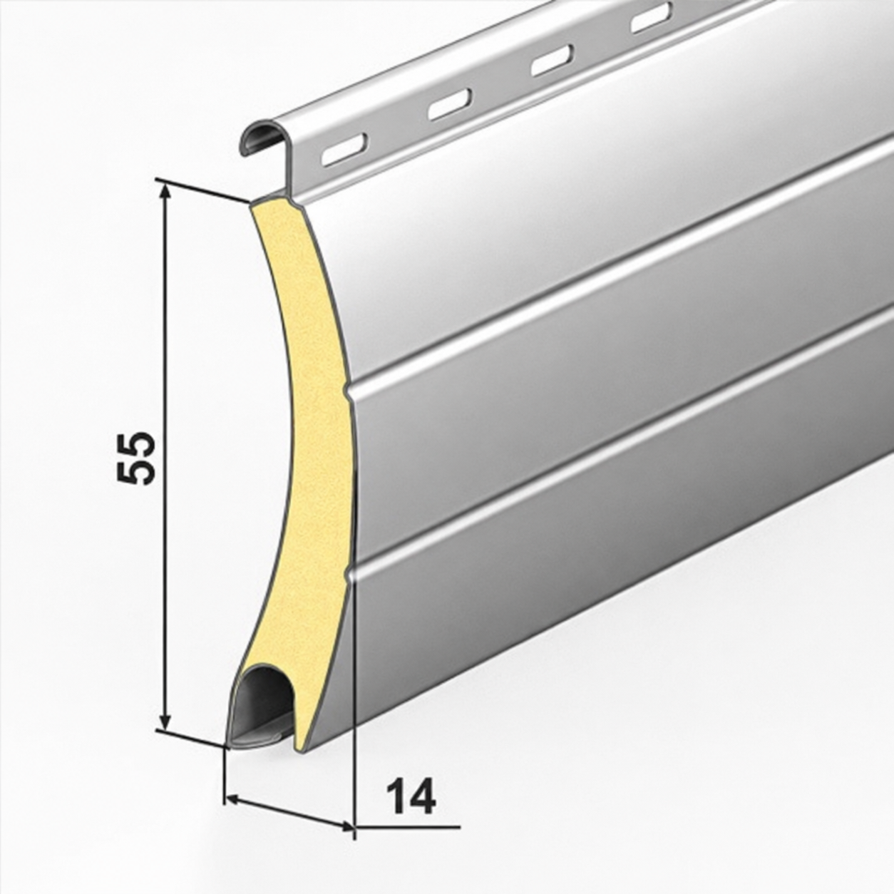

01Műszaki adatlap
Redőnyös garázskapuk
Alumíniumból, poliuretán habbal töltött lamellákkal. Alább: hogyan kell olvasni a termék nevében szereplő méreteket, hogyan számítható ki a szabad átjárási méret, és mik a két lamellacsalád teljes műszaki adatai.
Hogyan kell olvasni a méreteket
A webhelyen feltüntetett méretek: SSSS × MMMM, ahol SSSS = a szélesség, és MMMM = a magasság.
Ezek a garázskapuk gyártási méretei, és tartalmazzák a vezetősíneket a szélességben és a tokot a magasságban.
A szabad átjárási méret a gyártási méretekből levonva adódik:
- Redőnykapu 55 mmSSSS − 150 mm és MMMM − 300 mm
- Redőnykapu 77 mmSSSS − 180 mm és MMMM − 377 mm
Ahol a gyártó kifejezetten megadja az átjárási méretet, azt a termékoldalon feltüntetjük.
Miért redőnykapu
A garázskapu az igényes külső kialakítás nagyon fontos eleme, a színválaszték pedig lehetővé teszi, hogy felfrissítse háza megjelenését. A megbízhatóságukról és biztonságukról ismert redőnykapuk ideális választást jelentenek a garázs felszereléséhez.
Az alumíniumból készült, vízszintes redőnyös lakossági garázskapu hő- és hangszigetelő, lamellái poliuretán habbal töltöttek. Sokféle helyzetben használható: a szokásos garázskapu-szereptől az üzlethelyiség vagy egy ipari csarnok kapujáig.
A nyitás és zárás módja miatt a garázskapu nagyon kevés helyet foglal el, a hozzáférés pedig javul. A redőnykapuk előnye a szekcionált kapukkal szemben, hogy az összes lamella egy tokba tekeredik, amely sokkal kisebb helyet igényel és foglal el.
Szerkezetileg a redőnyös garázskapuk nagyobb méretű külső redőnyök, amelyek lamellái poliuretán habbal töltöttek a hőszigetelés és a szilárdság érdekében. A kapu méretétől, illetve a projekt által megkívánt szilárdságtól és hőszigeteléstől függően a lamellák mérete 55 vagy 77 mm.


Műszaki adatok
| Alumíniumlemez tok | 250 × 250 mm, 0,95 mm vastag |
|---|---|
| Alumínium oldalfedelek | 250 mm |
| Alumínium lamellák poliuretán habbal | 55 mm, 14 mm vastag |
| Lamellapáncél tömege | 4 kg/m² |
| Záró lamella | alumínium |
| Horganyzott acéltengely | Ø 60 mm |
| Csapágyak | acél |
| Alumínium kapuvezető sínek (lábak) | 75 × 30 mm |
| Alumínium oldalfedelek | 300 vagy 350 mm |
|---|---|
| Alumínium lamellák poliuretán habbal | 77 mm, 20 mm vastag |
| Lamellapáncél tömege | 6 kg/m² |
| Záró lamella | alumínium |
| Horganyzott acéltengely | Ø 70 mm |
| Csapágyak | acél |
| Alumínium kapuvezető sínek (lábak) | 90 × 35 mm |
| Működtetés | csőmotor vezérlőegységgel |
|---|---|
| Távirányítók | 2 darab |
| Tartalék működtetés | kurbli és kardáncsatlakozó |
| Nyitási / zárási idő | körülbelül 10 másodperc, modelltől függően |
| Záró lamella | alumínium, tartozék |